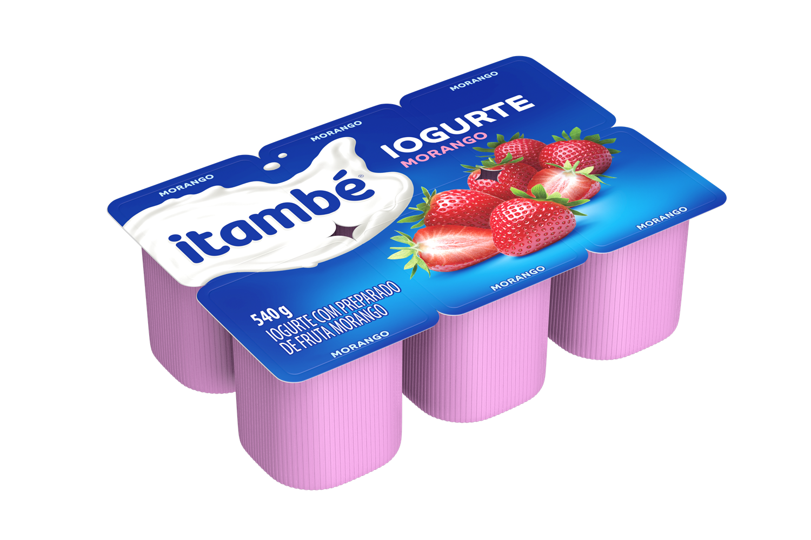

um produto lácteo fermentado, geralmente consumido como sobremesa ou lanche, com diferentes sabores e consistências.
Ela desfrutava de um iorgute cremoso de morango enquanto relaxava na varanda, apreciando o sabor refrescante e nutritivo do lanche.